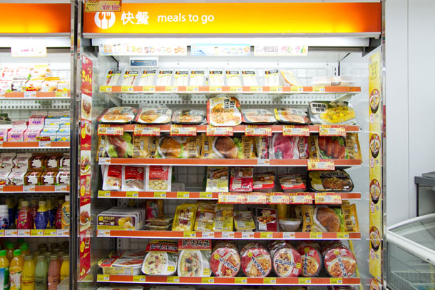
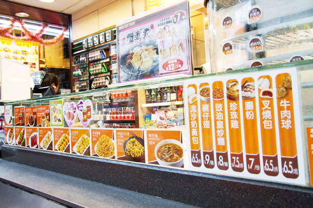
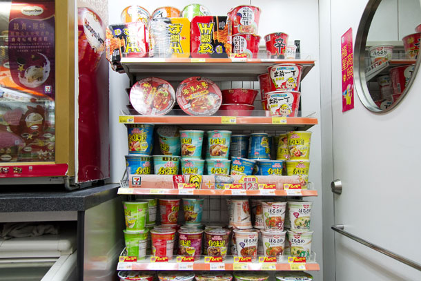

It's just before noon on a Tuesday, and despite the rain, a few dozen schoolgirls in white uniforms and navy cardigans are milling about the 7-Eleven on Tong Chong Gai, a bustling Hong Kong side street of restaurants and cafés. A few of the teenagers grab chocolate milk and sushi rolls from the open chiller. The others queue up to order a hot lunch at the brand-new food counter that is manned by half a dozen employees in bright orange uniforms.

Welcome to Hong Kong's first 7 Café, part of the U.S. convenience-store chain's global foray into fast food. Part convenience store, part fast-food restaurant, the café opened its doors last month with a rotating menu featuring dishes you're more likely to see in a college cafeteria than a corner store: chicken fillet with onion and black-pepper sauce, Japanese udon noodles with curry, penne Bolognese. "We've been a snack destination," says Tim Chalk, commercial director of Dairy Farm, which holds the 7-Eleven area franchise for Hong Kong, Macau, Singapore and Guangdong. "We want to be a food destination."
Convenience stores have long been in the business of selling smokes, cold drinks and candy bars, but as consumers spend more and more on meals away from the home, ramping up food services is now seen as key to the industry's future. In Thailand, 7-Eleven sells burgers. In Japan, they fry their own chicken. In the U.S., a quarter of the chain's stores have rolled out oven-cooked pizzas. 7-Eleven's rival in Hong Kong, Circle K, serves toast and pasta dishes. "Convenience stores as an industry are heavily reliant on product categories such as cigarettes, which are under extreme pressure from a health and regulatory perspective," says Dennis Phelps, vice president for fresh food at 7-Eleven's corporate headquarters in Dallas. "People may choose to quit smoking, but they will not quit eating."
The convenience store already occupies a special place in the heart of Hong Kong.
Although most of the stores are no bigger than a New York studio apartment, they're as ubiquitous as Starbucks in Seattle: there are nearly 1,000 7-Elevens in this city of 7 million — almost as many as in the whole state of California. (Circle K has a third of that number.) An estimated 85% of Hongkongers visit a 7-Eleven every month, according to the company, where they can do everything from withdraw money and replenish their subway passes to pay their electricity bill and send money overseas.
But in this food-obsessed city where the collision of Western and Chinese cuisines has created finely attuned tastes, trying to enter the fast-food market can be risky. Long before corporate chains began setting up shop, Hongkongers could find a quick meal at local cha chaan teng, or tea cafés, serving soup with noodles and meat, or storefront street vendors selling shao mai, or dumplings, and fish balls — spongy fried balls the size of jawbreakers that are made from minced fish and dough.

For years, 7-Eleven Hong Kong has shown deference to Hong Kong's love of food by offering ready-to-eat local fare like pork buns, shao mai and fish balls. (The more familiar roller-grill hot dogs and Slurpees are also available at some of the stores.) In fact, Casey Lum, who researches extensively on Hong Kong food culture and is the director of graduate studies in communication at William Paterson University, says part of the company's success in Hong Kong is due to the fact that it has become a "glocal" chain — a global brand adapted to local tastes and habits. For taxi drivers working the overnight shift, for instance, 7-Eleven is often the only place they can stop for a quick Cantonese snack.

But when it comes to a full meal, wooing customers away from their favorite haunts could be a challenge. Many of the street vendors, as well as the cha chaan teng and noodle shops, have deep roots in the community, and customers go to them intentionally to eat. Corporate global chains may be fine for a snack but "are not perceived to be authentic" when it comes to a meal, says Stephen Wong, program director of HKU/SPACE and a former food columnist for the Chinese-language newspaper Ming Pao. "People know they're from the States. People expect an authentic American flavor," he says. While U.S. brands are well-trusted in a city with widespread concerns about hygiene and food safety, Shaun Rein, managing director of the China Market Research Group, isn't convinced this will translate into a successful restaurant business. "7-Eleven is going to have a hard time," Rein says.
Others think the model could take off. "I don't think 7-Eleven is competing with street vendors per se because the crowd is different," says Lum. "The younger generation may go to 7-Eleven a lot more easily than those people who are older." Back at the café on Tong Chong Gai, he appears to be correct. Loretta, 16, orders her lunch of laksa, a curry noodle soup. She says she likes the variety here. Plus, she says, "it's new." Vivian, 17, picks a temaki roll off the shelf and says she comes here because it's cheap. "They don't want to spend much money on lunch because they want to save it for entertainment," she says, referring to the friends around her.
For now, 7 Café seems to have captured young Hong Kong's attention. Whether the chain can keep it remains to be seen. Says another girl, as she opens a container holding a chicken fillet with mushroom gravy: "Today I go here, but maybe tomorrow I'll go to another store."